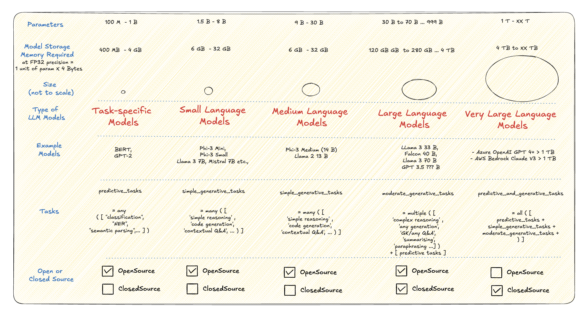
In the blog post, I explore the compute environments for the plethora of OpenSource LLMs in the market
This blog covers 4 Serverless LLM Recipes useful from the point of view of learning and building PoCs
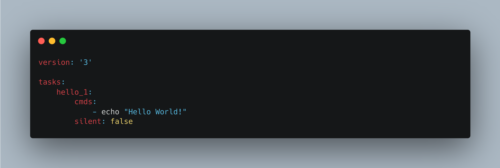
Task
This blog covers how to use the amazingly simple Task runner in the most productive way in 10 easy-to-understand sections
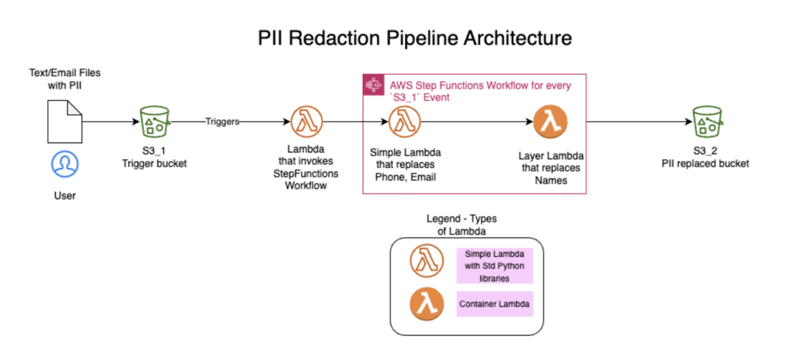
This blog was originally presented in PyCon India 2023 Open Spaces Talk on behalf of Toyota Connected India
The bash script recipes discussed here can be used as-is like a mini-cookbook or for understanding the fundamentals of bash scripting
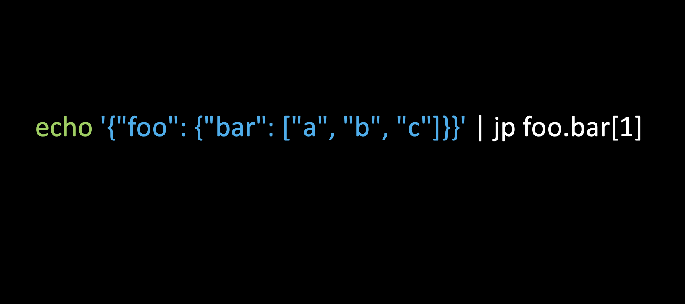
I discovered jmespath when using aws cli --query. This post is an earnest attempt to spread the word about JMESPath expressions
jmespath
aws cli --query
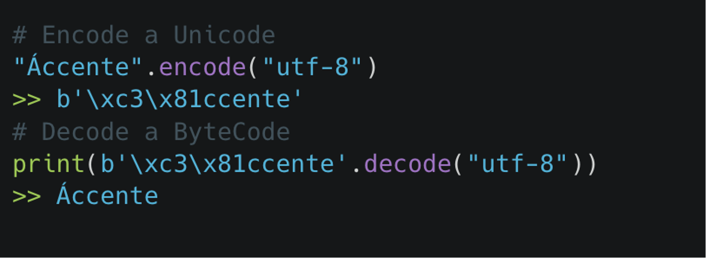
A short blog on my experiences dealing with non-ASCII characters in Python 3
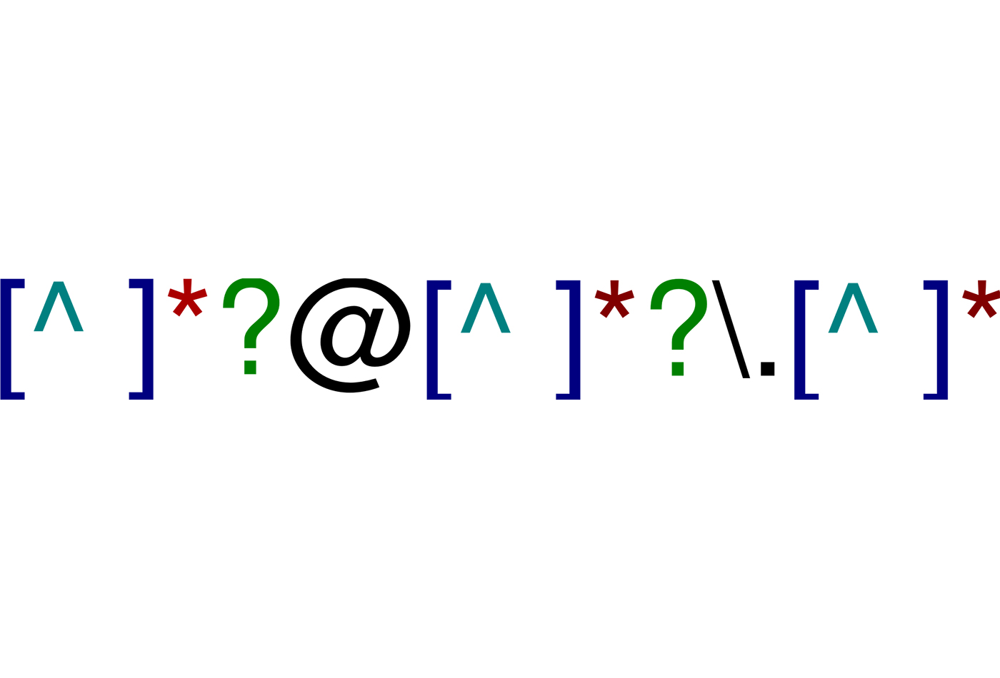
A selected list of confusing Regex Patterns that helped me learn its working better
This blog holds my SQL notes from Kaggle.com/learn course on SQL Fundamentals
Let us dig into the PostgreSQL Couplets to update RDS & common Python (Psycopg2) scripts to access PostgreSQL RDS
A quick guide manual to level up your understanding and use of Bash Scripting
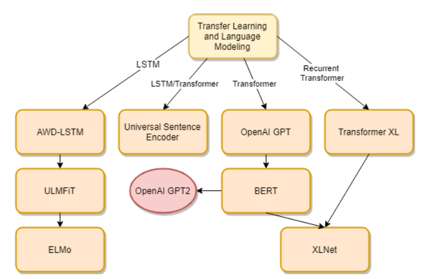
An overview covering important NLP milestones from pre-transfer learning era until the era of BERT (before GPT)
This blog is inspired from my notes on Kaggle Learn Course on ML. It has code snippets in Scikit-learn and Pandas to put concepts into practices
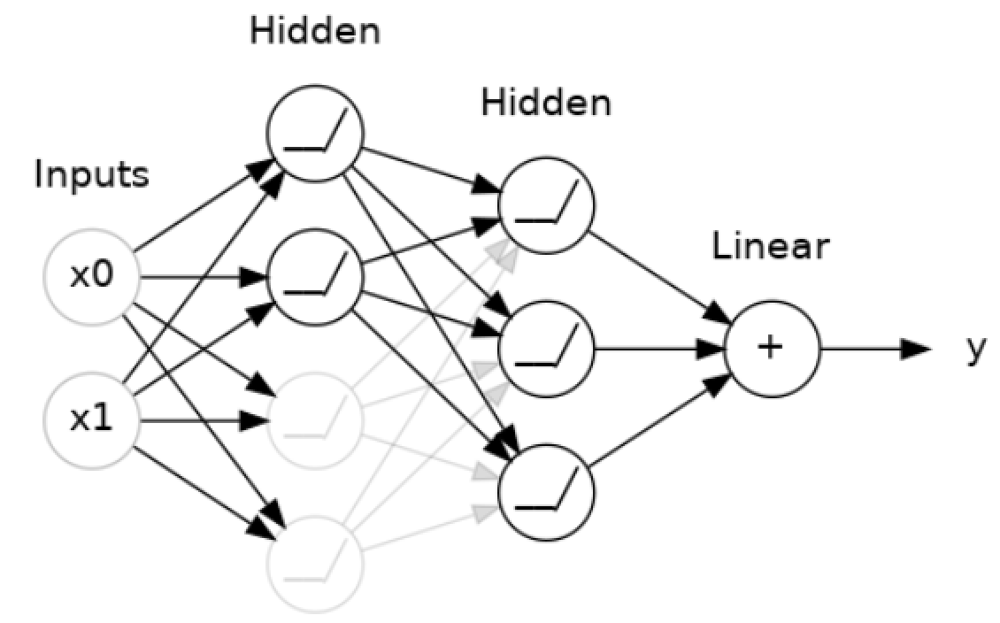
This blog is inspired from my notes on Kaggle Learn Course on DL. It has code snippets in Keras and Pytorch to put concepts into practices
My notes from a LinkedIn Course on Statistics
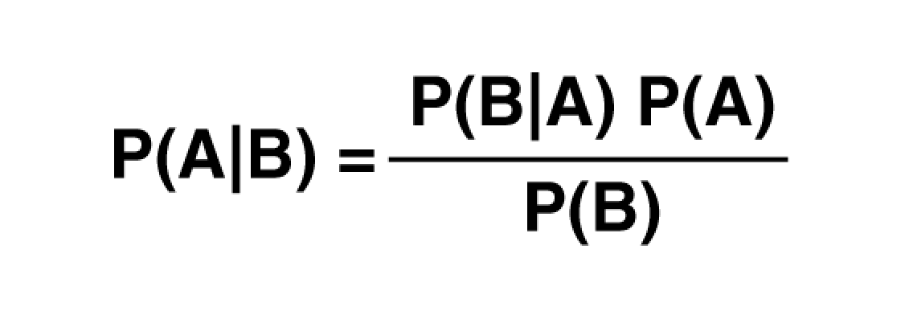
My notes from a LinkedIn Course on Probability
This blog post explains how to build Linear Text Classifiers using PyTorch’s modules such as nn.EmbeddingBag and nn.Embedding functions to convert tokenized text into embeddings
nn.EmbeddingBag
nn.Embedding
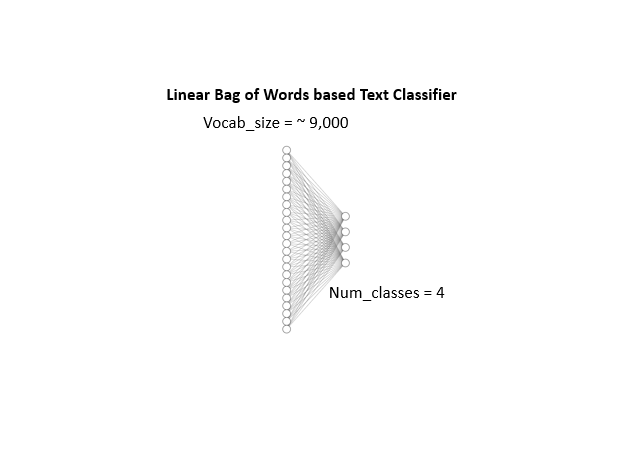
This blog post explains the use of PyTorch for building a bow-based Text Classifier
This blog post explains the basics of PyTorch Tensors, the workflow to train a 2 layer Neural Network for a vision dataset and track the progress in a Tensorboard
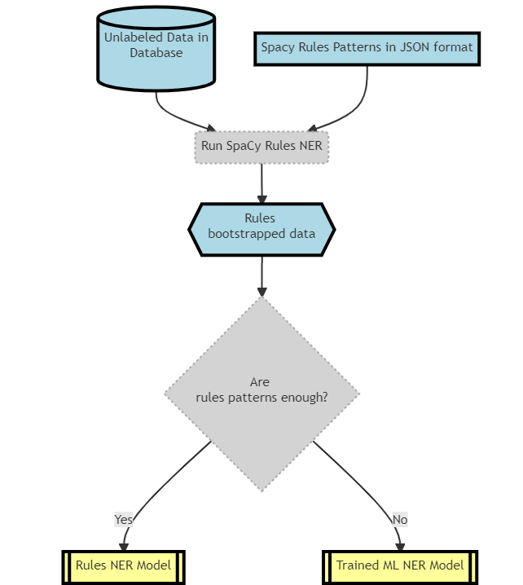
In this blog post, I cover the process of creating trained ML NER model from Unlabeled data
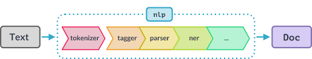
This blog post outlines the important features in Spacy Rules NER
Part 2 - A deeper technical view of the BERT architecture
Part 1 - My notes on how BERT works at a high level view
A Short Study comparing PTW_LDA and Transfer Learning powered KMeans on Text Data
Highlighting the non-mathematical essentials in the evolution of RNN architectures in Transfer Learning (before Transformer-based models came to the fore)
This blog post attempts to explain one of the seminal algorithms in NLP for embedding creation
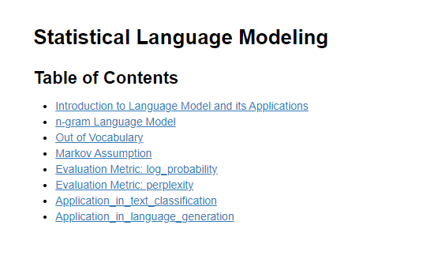
A gentle introduction to understand the ABCs of NLP in the era of Transformer LMs generating poems.